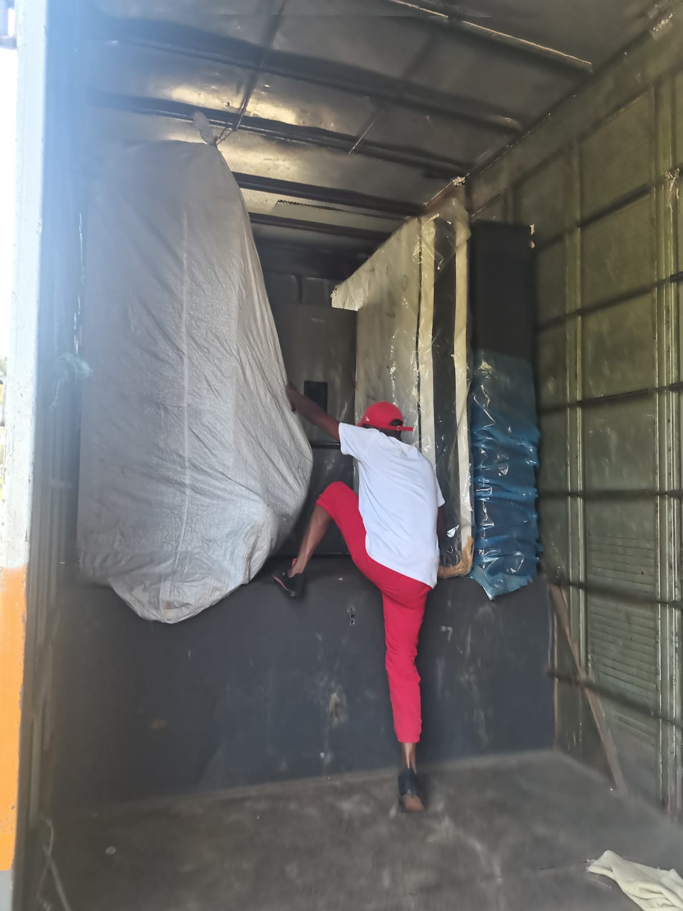

Kraaifontein & Brackenfell
Our home base — fastest response, competitive rates and a team that knows every street.
Based in Kraaifontein — serving Bellville, Brackenfell, Durbanville, Parow & surrounds
Wize Removal is based in Kraaifontein, putting us right at the heart of Cape Town's Northern Suburbs. That means faster response times, lower travel costs and a team that genuinely knows your area inside out.
Whether you're moving house in Bellville, clearing out a property in Brackenfell, or need an old couch collected in Durbanville, we're your closest and most reliable removal option.

Our home base — fastest response, competitive rates and a team that knows every street.
Full removals, single items and commercial relocations across Bellville and Parow.
Discreet, careful removals for the larger properties and estates around Durbanville.
Affordable removal services in Goodwood, Monte Vista, Kuils River and surrounds.
Fast, affordable furniture collection and house moves across Kleinvlei and Eerste River.
We serve all Kraaifontein sub-areas including Scottsdene, Bloekombos and Wallacedene.
Claremont, Rondebosch, Wynberg, Kenilworth, Constantia & Tokai — all covered.
Southern SuburbsSea Point, Green Point, Camps Bay, De Waterkant and the City Bowl.
Atlantic SeaboardJust one couch, bed or appliance to go? Fast single-item collection — no full truck needed.
Single Item Removal